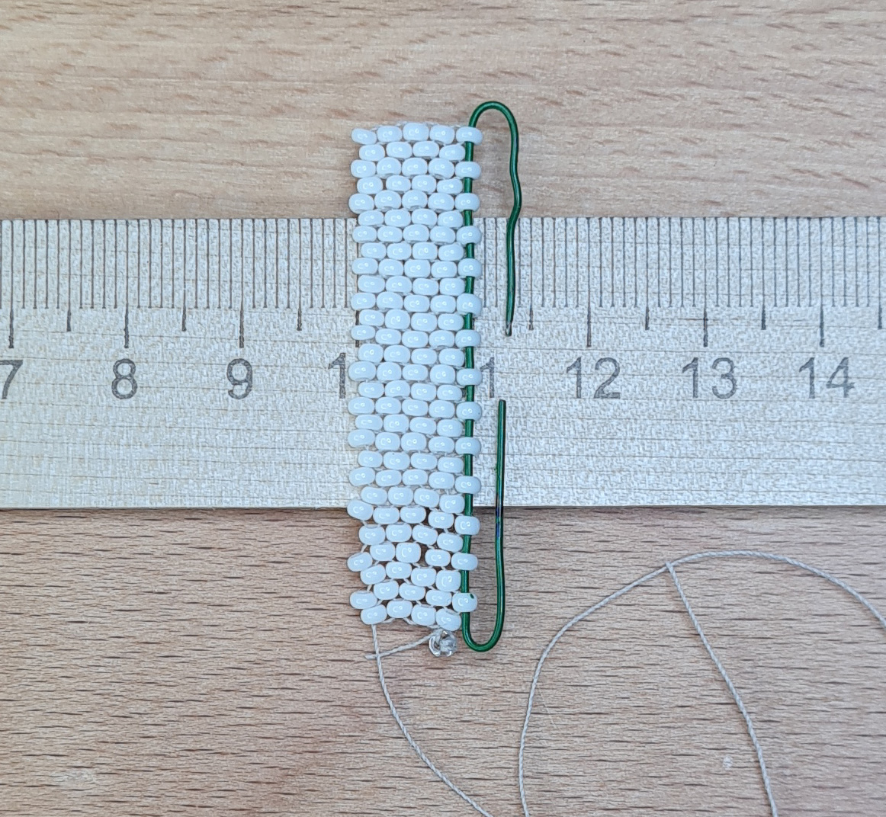
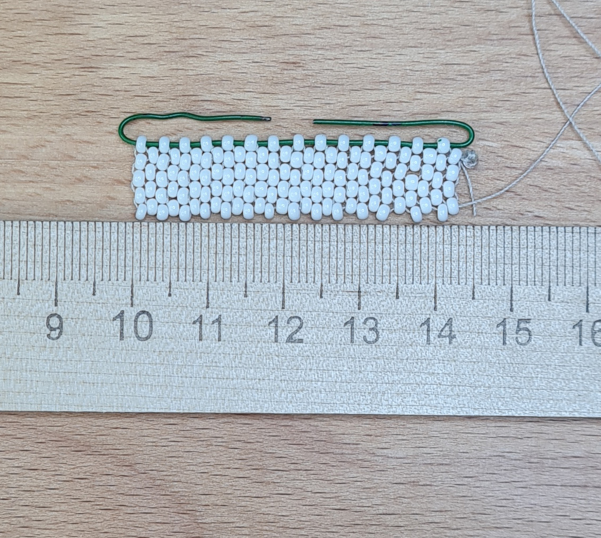
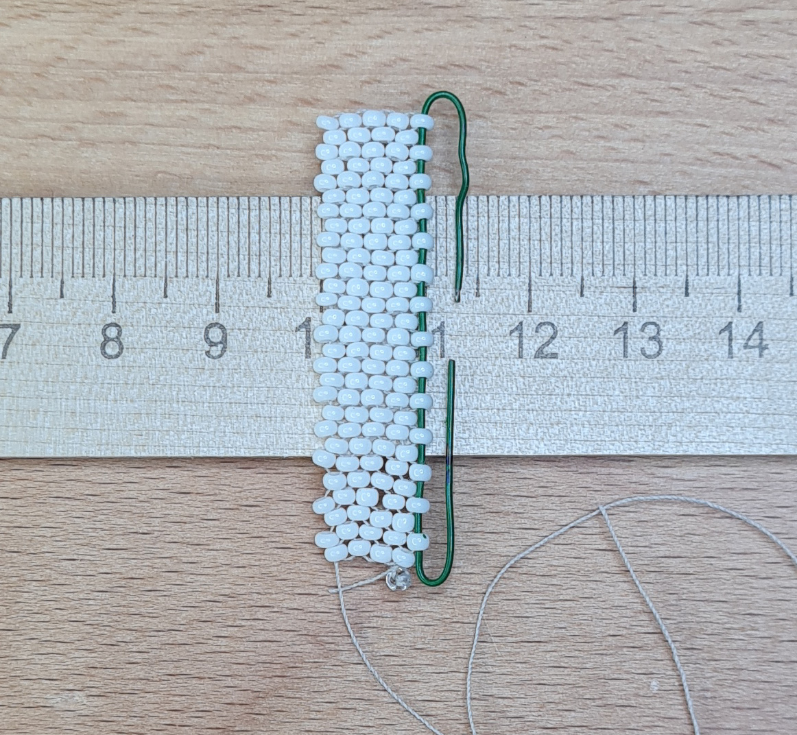
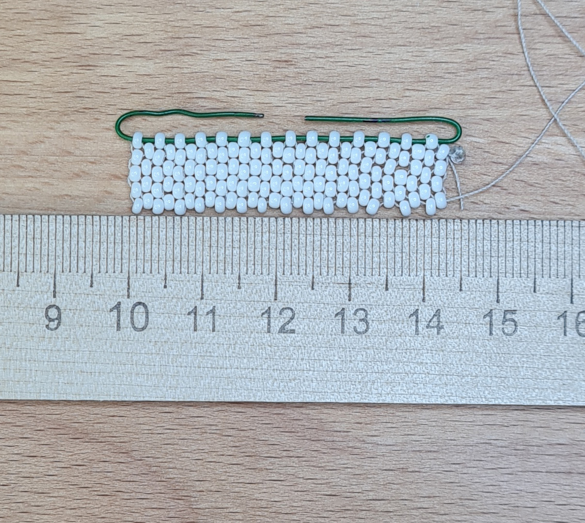
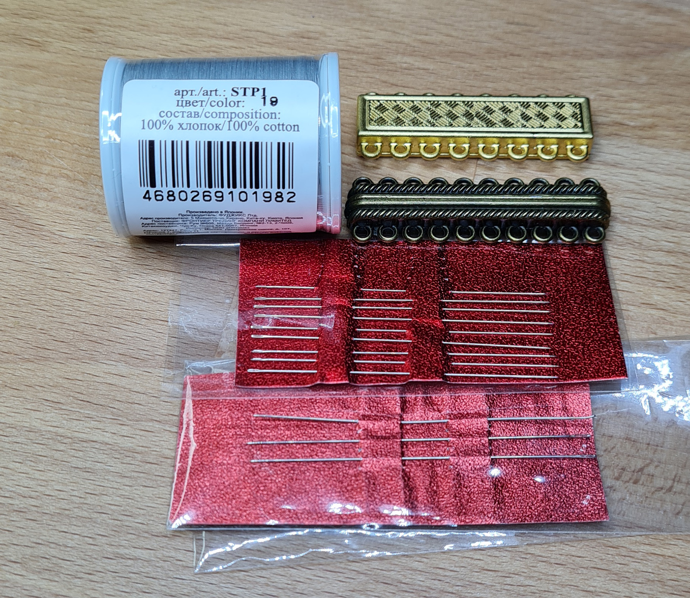
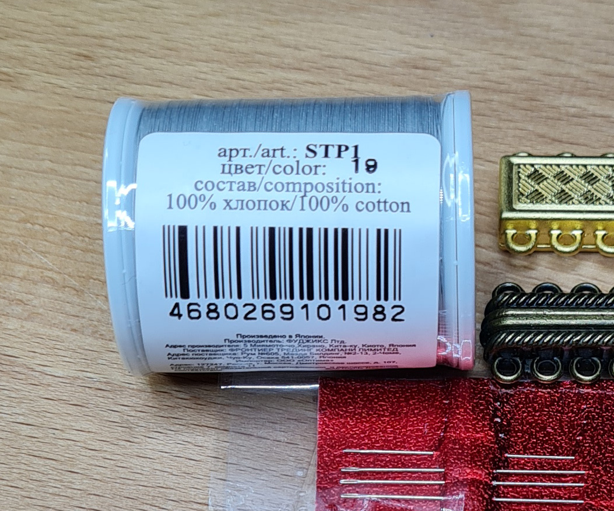
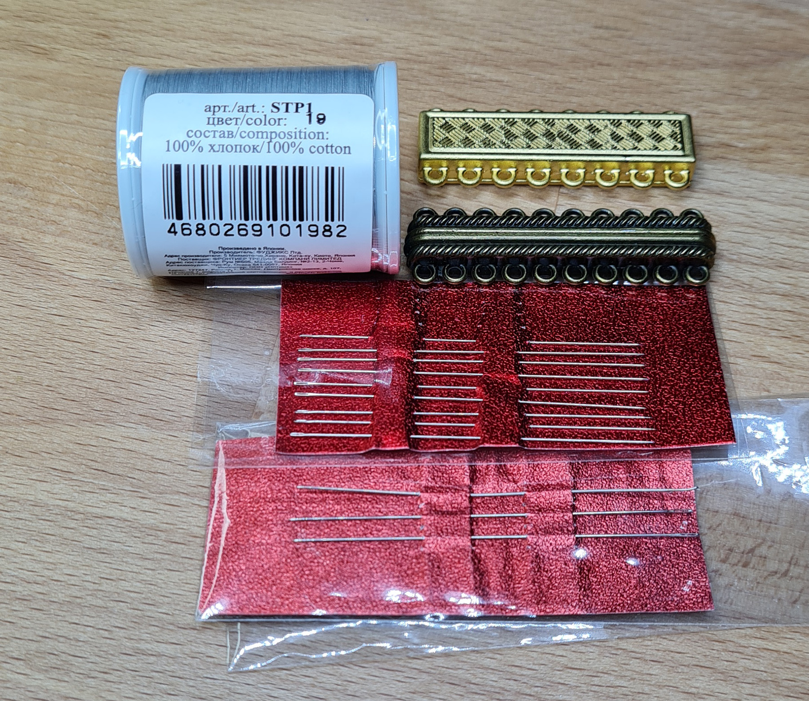
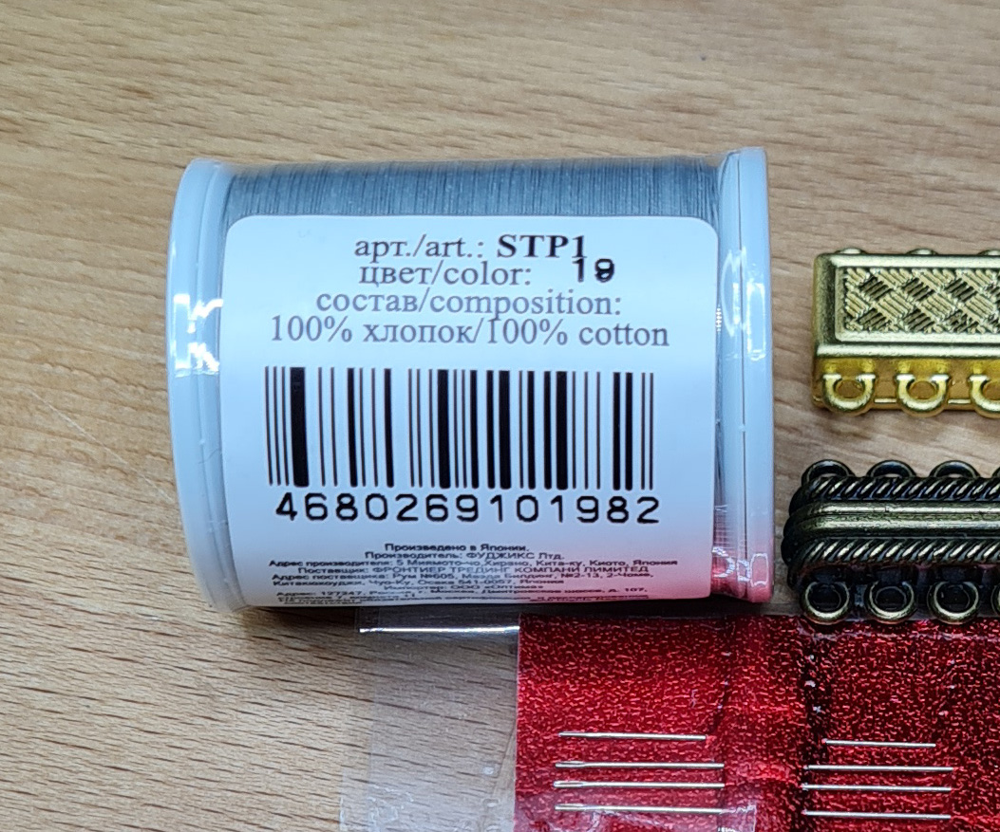

Браслет в египетском стиле
Еще немного истории. В словарях и энциклопедиях указано, что слово бисер происходит от арабского buser, что означает зернышко из стекла/фальшивый жемчуг.
Достоверно не известно, где и когда появилость стеклоделие. Одни источники говорят, что оно появилось в Древнем Египте начала Додинастического периода, это пятое тысячелетие до нашей эры. Другие источники утверждают, что родиной стекла была Древняя Месопотамия.
Один из способов изготовления бисера в Древнем Египте, это вытягивание стекломассы с помощью металлического тонкого прута с последующим наматыванием на медный стержень соответствующей толщины. По этому он так сильно отличается от современного.
Фото ниже сделано мной в музее изобразительных искусств им А. С. Пушкина. Зал искусств Древнего Египта, экспонат №23 Украшение из бисера. Какое же именно это было украшение, выполненное в технике мозаичного плетения? Браслет на запястье, на плечо, а может часть ожерелья или даже пояс? Эта загадка наверное никогда не убдет разгадана.
На вскидку ширина этого предмета где-то от 4 см до 5,5 см. Но одного взгляда достаточно, что бы сказать — Хочу такой же!
Выполнить реплику такого украшение в виде браслета особого труда не составит. Нужно только проявить внимательность к некоторым деталям. Например, очередности цвета. С одной стороны бусинки песочно цвета вставлены между черными и синими, а с другой стороны это цвет добавлен еще и между бирюзовым и белым.
Измеряем свое запястье и прибавляем 2 см для комфорта — это будет длина готового браслета с застежкой.
Если делать замкнутый, без застежки, то измерение делается по другому. Пальцы руки следует сложить лодочкой, как будто надеваете украшение и сантиметровой лентой сделать замер по костяшкам. Для уверенности, что при надевании браслет не расползется, прибавляем к полученному результату 0,5 - 0,8 см. Мои замеры: запястье 16 см, а по костяшкам пальцев 19 см.
Какой бисер взять? На мой взгляд отлично подойдет как японский № 8-7, так и чешский. А может кто-то отдаст предпочтение Miyuki № 10 или 9.
Не зависимо от выбора бренда и номера потребуется бисер без блеска(жемчужного, перламутрового и т.д.) и максимально приближенной цветовой гаммы.
На что же нанизывать? Сейчас у нас есть выбор крепких синтетических ниток, которые устойчивы к истиранию, к воздействию химреагентов и обладающие малой усадкой - это капроновые, лавсановые и нейлоновые. Еще есть мононить или леска. Поскольку она практически прозрачная (есть и в темном варианте), то является фаворитом в работе с бисером. Но древнеегипетские мастера не могли использовать леску, капрон или нейлон. В их распоряжении были природные материалы — нитки из хлопка и льна, тоненькая тесьма, проволока из драгоценных металлов в том числе. Думаю, что так же использовались материалы животного происхождения - сухожилия и тонко нарезанные шнурки из выделанных шкур.
А сколько пакетиков брать? А вдруг не хватит? Можно, конечно, прикинуть, с учетом +/- трамвайная остановка. А можно сделать небольшие расчеты, которые в некоторых случаях могут помочь оптимизировать расходы на материалы.
Спустя пару часов… ))
Сначала я сделала рисунок экспоната № 23 полностью, с соблюдением очередности цвета. Далее сплела небольшой образец, что бы представить ширину будущего браслета, а так же сделать расчеты по количеству рядов опираясь на размер своего запястья. И потом уже дорисовала схему. Так мне будет легче делать пометки и считать ряды в процессе плетения.
 



Для образца у меня нашлись остатки десятки PRECIOZA, который и будет использован далее.
Для моего браслета длиной 16 см (не считая застежки) потребуется чуть более 2000 бусинок бисера Preciosa № 10. Ширина же браслета получается около 4,3 см и он не будет выглядеть громоздким.
Расчет количества бусин по цветам можно определить по раппорту. Но не забываем, что с одной стороны в украшении песочный цвет вставлен еще и между бирюзовым и белым.
Обязательно учитываем потери - случайно зацепили и рассыпали, кот или ребенок решили приобщится к рукоделию и т.п.. Поэтому всегда необходим запас.
Замок подбираем согласно ширине браслета.
Теперь за покупками. Фото на страничках интернет-магазинов не всегда верно передает цвет и не дает такого спектра эмоций, как посещение магазина. Выбрать именно тот синий или бирюзовый, который больше всего подходит согласно фото экспоната. Сравнить бирюзовость бусин разных производителей, а так же размер отверстия и форму в определенной категории. Главное не зависнуть перед витриной всего этого многообразия с вопросом — PRECIOZA керамика или TOHO непрозрачный? Что бы купить шесть пакетиков бисера я провела в магазина без малого два часа и все таки остановилась на PRECIOZA керамика (Natural Opaque) №10, первый сорт, на котором и делала расчеты.
Итого: бисер PRECIOZA №10 черного, песочного, синего, бордового, бирюзового и белого цветов в пакетиках по 50 грамм, замок золотого и бронзового цвета, иглы для бисера и нитки хлопковые.
 



Теперь можна начать волшебство.
Набираем нужное количество бусинок на двойную(!) нить, а затем через одну бусинку пропускаем проволочку, загибаем концы и с удовольствием продолжаем работать.
Очень важный момент, это натяжение нити. Если её постоянно подтягивать, то полотно браслета начинает становиться твёрдым и может пойти волнами, которые не расправляются. Такое украшение не очень приятно носить и к тому же теряется его эстетический вид. За натяжением следить достаточно просто — мягкость и подвижность браслета говорит о том, что все отлично получается. Если мне не понравилось как получился очередной ряд, чувствуется пальцами твердость, я его распускаю и набераю вновь. Руки быстро запоминают силу натяжения нити и дальше работа идет лучше.
Несколько раз мне приходилось распускать некоторое количество рядов и набирать заново, так как очень легко просмотреть очередность цвета.
Завершение и присоединение замка.
Так как исходником для браслета служит фрагмент украшения, который не имеет завершающих деталей, то я решила использовать современный магнитный замок. В итоге получилось два браслета с разным замками и способами их крепления.